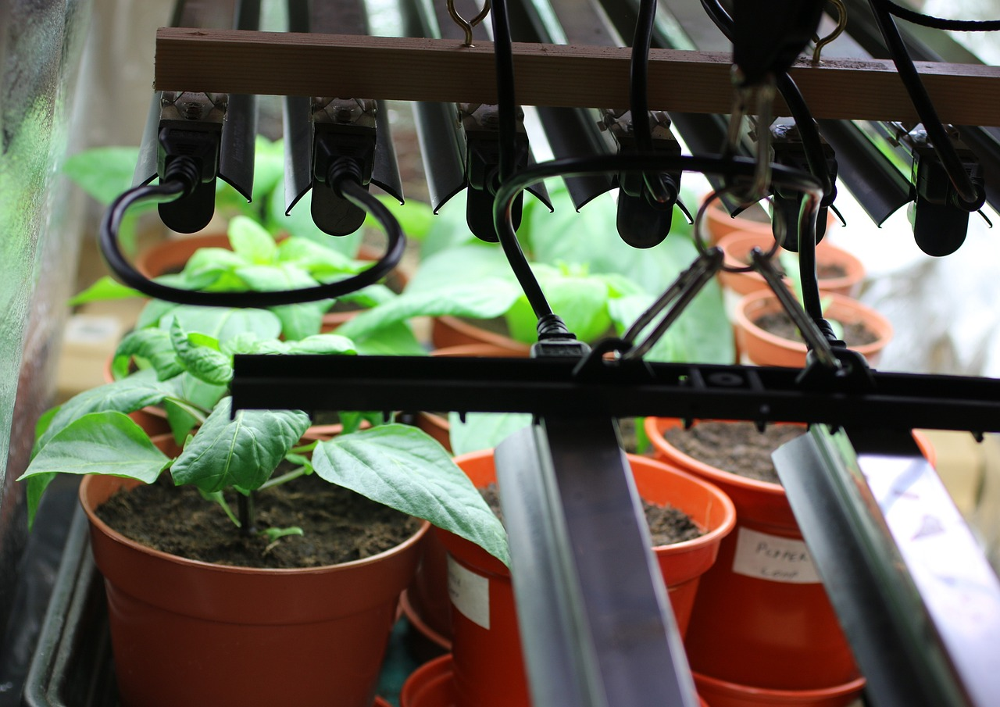

The ZZ Plant (Zamioculcas zamiifolia) is one of the most forgiving houseplants you can grow. Here's how to keep it thriving.
Read More →CULTIVATING CALM. GROWING JOY.
The Indoor Eden Co. helps modern urban dwellers create lush, peaceful sanctuaries through intentional indoor plant care and styling.
PLANTS FOR BEGINNERS
Start your plant journey with our curated selection of low-maintenance, forgiving plants perfect for first-time plant parents.
Explore →LOW LIGHT HEROES
Discover plants that thrive in shady apartments, north-facing windows, and other challenging low-light conditions.
Explore →ESSENTIAL TOOLS
The right tools make plant care easier and more enjoyable. Our honest reviews help you find quality equipment at any budget.
Explore →LATEST PLANT GUIDES
Beginner-Friendly
ZZ PLANT CARE GUIDE: THE PERFECT LOW-LIGHT COMPANION

Product Guide
BEST GROW LIGHTS FOR APARTMENTS (2025 GUIDE)
Living in a dark apartment? These affordable grow lights can transform any space into a thriving indoor garden.
Read More →